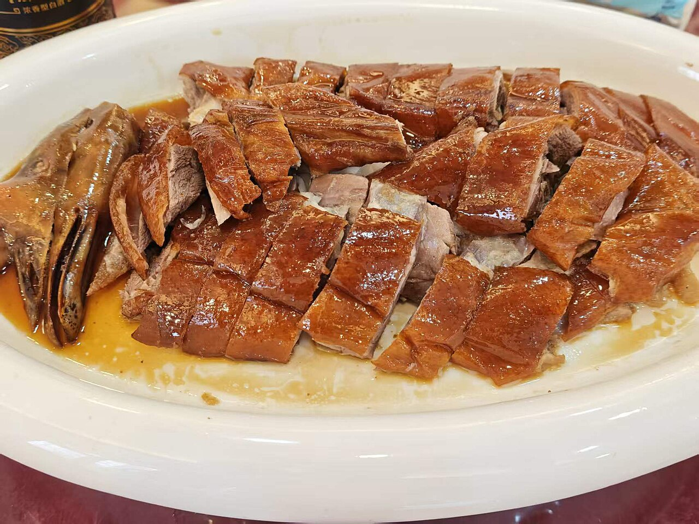

烧鹅Roast Goose · 粤菜
广式烧腊三宝(烧鹅、叉烧、烧肉)之首:选清远黑鬃鹅,吹气使皮肉分离, 内腔填五香八角、外皮上皮水,风干后挂炉炭火烤至枣红。 皮脆如玻璃、肉嫩多汁,配酸梅酱解腻,是深井烧鹅与港式烧腊的灵魂。
去哪儿吃?
香港·镛记酒家(中环)粤菜 · 人均 ¥250
香港中环威灵顿街32-40号
点评:以烧鹅闻名半世纪,皮脆肉滑、油香丰腴,外带烧鹅更是一绝。
广州·广州酒家(文昌总店)粤菜 · 人均 ¥110
广东省广州市荔湾区文昌南路2号
点评:烧鹅出炉即斩,皮色红亮、肉汁充盈,趁热蘸酸梅酱最妙。
怎么做?
- 黑鬃鹅 1 只
- 五香粉、八角、沙姜
- 盐、糖
- 麦芽糖、白醋(上皮水)
- 玫瑰露酒
- 酸梅酱(蘸食)
- 鹅治净,从颈部充气使皮肉分离,内腔抹五香盐料并缝口。
- 滚水淋烫鹅皮收紧,再均匀浇上皮水(麦芽糖+白醋),吊起风干数小时。
- 挂炉(或烤箱)先用中火烤熟内里,再转猛火把皮烤至枣红酥脆。
- 出炉静置片刻让肉汁回流,趁热斩件,皮朝上装盘。
- 配酸梅酱与卤汁上桌。
小贴士:"上皮水 + 风干"决定脆皮;斩件要快且刀要利, 避免压破脆皮;家中复热可用平底锅小火把皮烘脆。